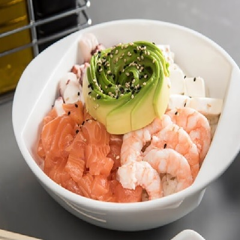

El gohan sushi
Conocido también como ensalada de sushi, o correctamente chirasashi y barazushi es básicamente un sushi en bowl para comerlo sin enrollar. Su nombre significa “sushi esparcido”, y si bien este plato es tradicional de Japón en nuestras tierras sufrió una chilenización tanto en los ingredientes como en la presentación.
Gunkan sushi
Conocido también como ensalada de sushi, o correctamente chirasashi y barazushi es básicamente un sushi en bowl para comerlo sin enrollar. Su nombre significa “sushi esparcido”, y si bien este plato es tradicional de Japón en nuestras tierras sufrió una chilenización tanto en los ingredientes como en la presentación.